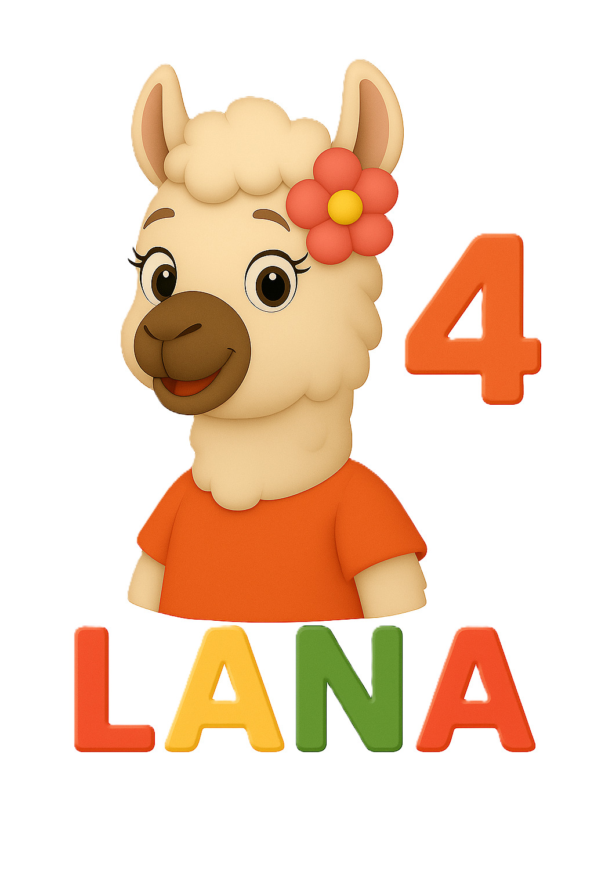
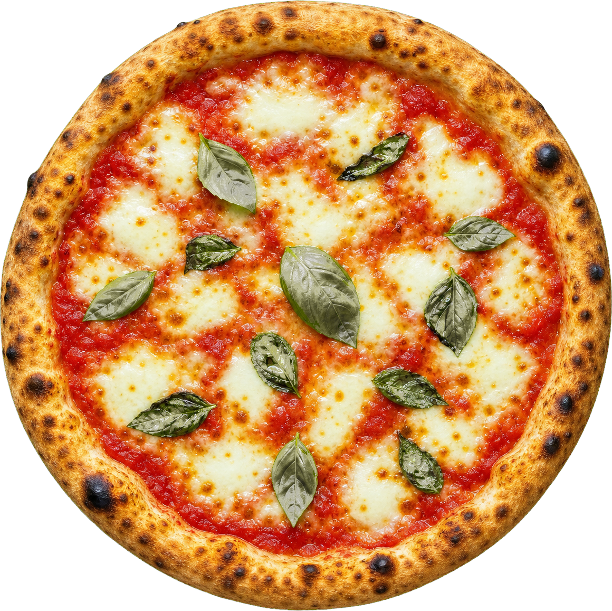

VIERDE LEERJAAR · GROEP 6
Spelen met Lana
Kies een spel en ga de uitdaging aan!

Wat wil je spelen?
Kies een avontuur en oefen op je eigen tempo.

De Breukenstudio
Bouw, combineer en vergelijk breuken met voedsel, stroken en een maatbeker.